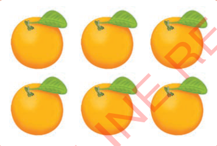
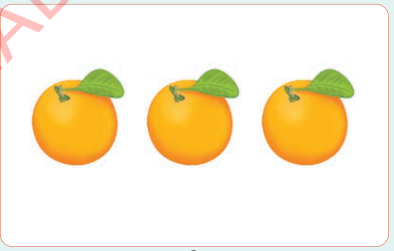
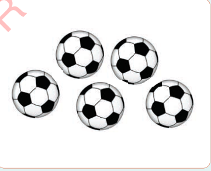
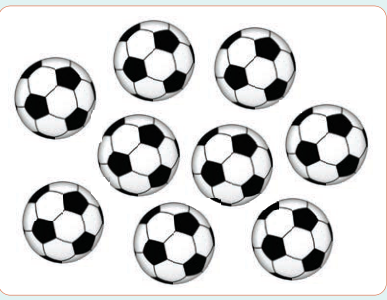

Chapter One
Comparing number of objects
Identifying groups with many or few objects
Objects exist in different quantities.Some can be many or few than others.
Example 1

many

few
Example 2

few

many